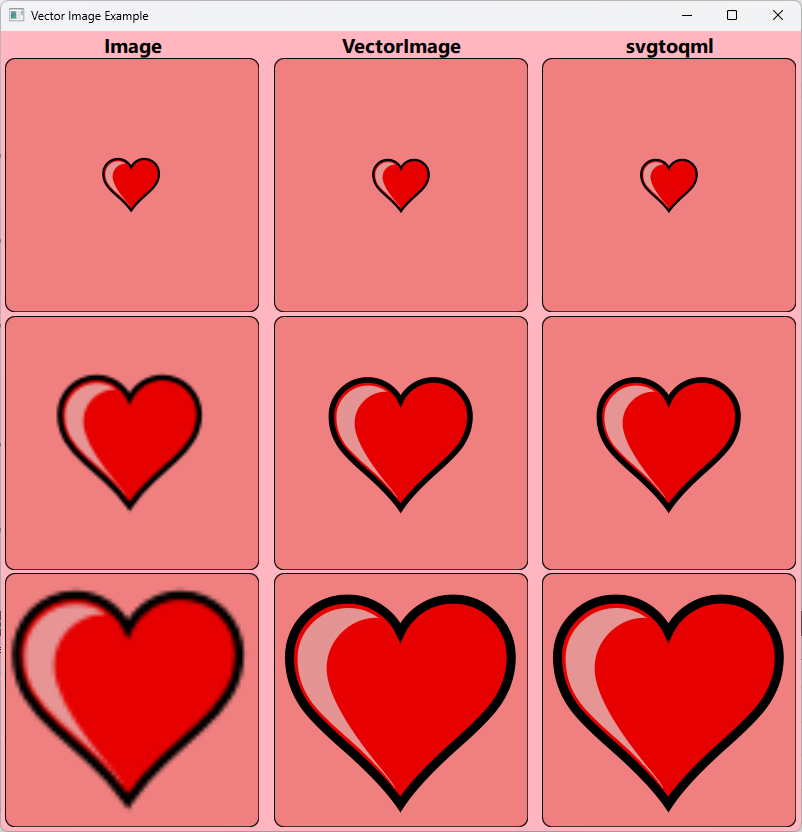

Vector Image Example
A Qt Quick example demonstrating the differences of Qt SVG, VectorImage and svgtoqml.

There are several different ways you can include two-dimensional vector graphics in your Qt application. This example focuses on the SVG format and how this can be used with Qt. As a baseline, Qt supports the static features of the SVG Tiny 1.2 profile. In addition, Qt SVG optionally supports some features from the full profile, but those are not used in this example.
The example shows a grid of 3x3 cells, each containing the same vector image of a heart. The heart image is provided as an SVG file with the example.
In the grid, each row shows the image at a different scale factor (1x, 2.5x and 4x respectively).
Each column represents a different way to render the vector graphics in Qt. The left-most column is an Image component, the center column is a VectorImage component and the right-most column is a pregenerated QML representation created using the svgtoqml tool.
Each method of rendering the vector graphics has its own benefits and drawbacks, and caters to different use cases. To make an informed decision about which one to use, it can be useful to understand the details of how they differ.
The Image component and Qt SVG
When you use the Image element and set an SVG file as source, this will invoke the image format plugin in Qt SVG. The plugin will parse the SVG file, rasterize it using the software rasterizer in QPainter and then provide it to Qt Quick as a pixmap image. This is equivalent to using the QSvgRenderer class to draw the image.
Image {
sourceSize: Qt.size(topLevel.sourceSize, topLevel.sourceSize)
source: "heart.svg"
}
Since the vector image is rasterized at a specific size, any transformation we apply to the Image will be applied to the rasterized image. This can result in pixelation artifacts and uneven curves.
Loading a vector image through Image works best if you request the image at the exact size that you intend to display. When the Image is displayed at a 1x scale in the top-most row, it looks identical to the others, but at higher scale factors it starts to look fuzzy.
If the image will ever only be displayed with a single size, then this will typically be the most performant option. There is a start-up cost for rasterizing the image at the specified size, but after this, the cost of copying the data onto the screen is very low.
But as the image is requested at multiple different sizes, the start-up cost will grow, as will the accumulated memory consumption. Animated zooms of the image can often get too expensive to run at full frame rate on lower end devices. These are the use cases for which VectorImage and svgtoqml should be considered.
The VectorImage component
As an alternative to Image, Qt provides the VectorImage component. This converts the SVG image to a vector graphics representation in Qt Quick, and rasterization happens on demand, on the graphics HW, as it is rendered to the screen.
VectorImage {
width: topLevel.sourceSize
height: topLevel.sourceSize
preferredRendererType: VectorImage.CurveRenderer
source: "heart.svg"
}
Since the image is not pre-rasterized, we can apply transformations to it without losing fidelity to the original shapes. Note that the example uses the VectorImage.CurveRenderer renderer type. This is recommended for use cases where the image will be transformed and antialiasing is needed.
This means that we can display the image at any size and even animate the scale of the image, and all the work will be done by the graphics hardware. However, when the VectorImage is rendered onto the screen, it will come at a slightly higher cost than rendering an Image. This is because the rasterization of curves happens every time the component is rendered and not ahead of time.
Therefore, VectorImage is most suitable for vector graphics where the size will change frequently. It can also be suitable when the destination size of the image is very large and memory consumption is a concern. When using Image, the full rasterized image has to be stored in graphics memory. Thus, the memory consumption will scale with the size of the image. The memory consumed by VectorImage will be the same, regardless of the destination size it is rendered at.
The svgtoqml tool
The VectorImage component parses the SVG file and builds up an equivalent scene of Qt Quick items at run-time.
If the SVG is part of the application assets, then some of the work can be done ahead of time instead, by using the svgtoqml tool. This tool produces the same scene as VectorImage, but instead of building it at run-time, it creates a QML file which can be included in the application project.
In this example, the heart.svg file has been pre-converted to a file called Heart.qml. This can be instantiated in the scene as any other Qt Quick item.
Heart {
width: topLevel.sourceSize
height: topLevel.sourceSize
}
By using this approach, we do not need to parse the SVG file every time the application is started. In addition, the svgtoqml tool can optimize and analyze the shapes, in order to provide the renderer with hints that will further speed up its run-time processing.
The svgtoqml tool should be considered for the same use cases as VectorImage and should be preferred whenever the SVG file is available as an asset when the application is built and is not provided by the end-user of the application.